Chapter 4
Contents
Chapter 4#
Figure 4.1, 4.2, and 4.3#
Steady states and phase plots in an assymetric network.
using DifferentialEquations
using ModelingToolkit
using Plots
using LinearAlgebra
# plotting default option(s)
Plots.gr(linewidth=2)
Plots.GRBackend()
# Convenience functions
hill(x, k) = x / (x + k)
hill(x, k, n) = hill(x^n, k^n)
hill (generic function with 2 methods)
@parameters k[1:5] n
@variables t A(t) B(t)
D = Differential(t)
(::Differential) (generic function with 2 methods)
eqs = [ D(A) ~ k[1] * hill(1, B, n) - (k[3] + k[5])* A,
D(B) ~ k[2] + k[5] * A - k[4] * B]
@named sys = ODESystem(eqs)
\[\begin{split} \begin{align}
\frac{dA(t)}{dt} =& \frac{1^{n} k_1}{1^{n} + \left( B\left( t \right) \right)^{n}} - \left( k_3 + k_5 \right) A\left( t \right) \\
\frac{dB(t)}{dt} =& A\left( t \right) k_5 - B\left( t \right) k_4 + k_2
\end{align}
\end{split}\]
params = Dict(k[1]=>20.0, k[2]=>5.0, k[3]=>5.0, k[4]=>5.0, k[5]=>2.0, n=>4)
u0s = (Dict(A=>0.0, B=>0.0),
Dict(A=>0.5, B=>0.6),
Dict(A=>0.17, B=>1.1),
Dict(A=>0.25, B=>1.9),
Dict(A=>1.85, B=>1.70))
tend = 1.5
sols = map(u0s) do u0
prob = ODEProblem(sys, u0, tend, params)
sol = solve(prob)
end;
plot(sols[1], xlabel="Time", ylabel="Concentration", title="Fig. 4.2 A (Time series)")
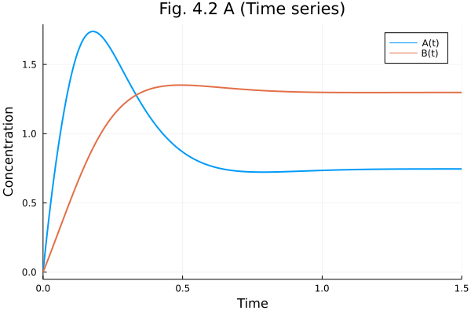
plot(sols[1], vars=(1, 2), xlabel="[A]", ylabel="[B]", aspect_ratio=:equal,
title="Fig. 4.2 B (Phase plot)", ylims=(0.0, 2.0), xlims=(0.0, 2.0),
legend=nothing)
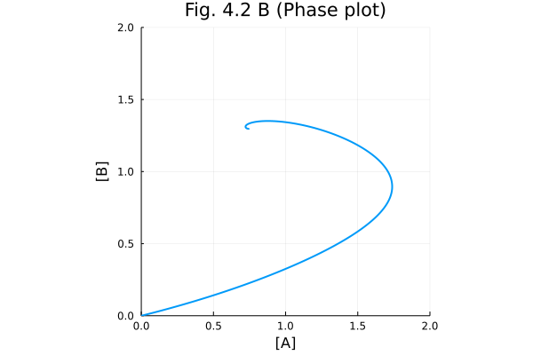
p3 = plot(xlabel="Time", ylabel="Concentration", title="Fig. 4.3A (Multiple time series)")
for sol in sols
plot!(p3, sol, linealpha=0.5, legend = nothing)
end
p3
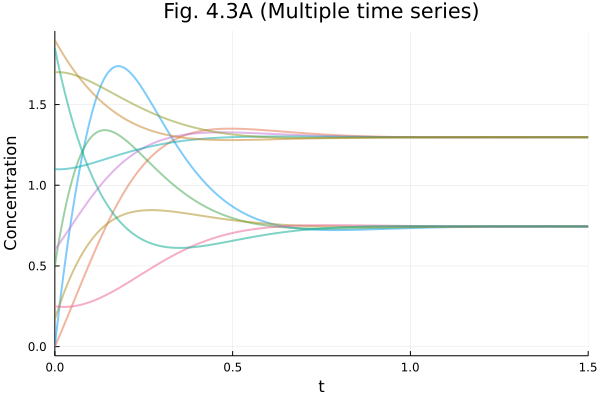
p4 = plot(title="Fig. 4.3B (Phase plot)", xlabel="[A]", ylabel="[B]")
for sol in sols
plot!(p4, sol, vars=(1, 2), linealpha=0.7, legend = nothing)
end
plot(p4, aspect_ratio=:equal, size=(600, 600), ylims=(0.0, 2.0), xlims=(0.0, 2.0))
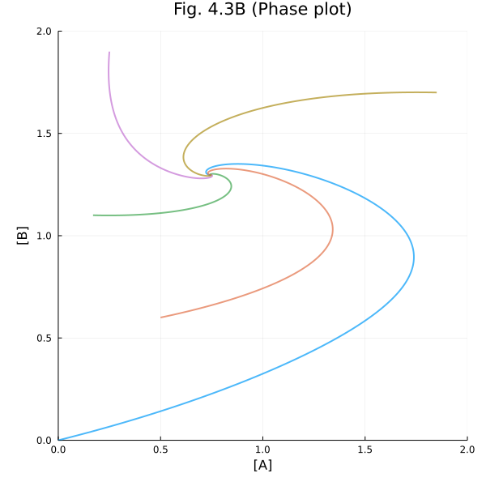
Figure 4.4, 4.5#
Vector fields in phase plots.
# Nullclines
nullcline_a(b) = params[k[1]] / (params[k[5]] + params[k[4]]) * hill(1, b, params[n])
nullcline_b(b) = (params[k[4]]*b - params[k[2]]) / params[k[5]]
nullcline_b (generic function with 1 method)
# Generate a good old function f(u,p,t) from the ODE system
ode_f = ODEFunction(sys, [A, B], [k..., n])
(::ODEFunction{true, ModelingToolkit.var"#f#414"{RuntimeGeneratedFunctions.RuntimeGeneratedFunction{(:ˍ₋arg1, :ˍ₋arg2, :t), ModelingToolkit.var"#_RGF_ModTag", ModelingToolkit.var"#_RGF_ModTag", (0x460df007, 0x88f35ae7, 0xf3fdb75f, 0x6a513a52, 0x343a42dd)}, RuntimeGeneratedFunctions.RuntimeGeneratedFunction{(:ˍ₋out, :ˍ₋arg1, :ˍ₋arg2, :t), ModelingToolkit.var"#_RGF_ModTag", ModelingToolkit.var"#_RGF_ModTag", (0x46dfd4da, 0xea4cc04b, 0x205c50cd, 0x86dd9669, 0xca3f9b03)}}, UniformScaling{Bool}, Nothing, Nothing, Nothing, Nothing, Nothing, Nothing, Nothing, Nothing, Nothing, Nothing, Vector{Symbol}, Symbol, ModelingToolkit.var"#474#generated_observed#421"{Bool, ODESystem, Dict{Any, Any}}, Nothing}) (generic function with 1 method)
# Try to plug in the inputs
ode_f([0, 0], [20, 5, 5, 5, 2, 4], 0.0)
2-element Vector{Float64}:
20.0
5.0
# function for the vector field
function ∂F(x, y, params; scale=20)
du = ode_f([x, y], params, 0.0)
return du ./ (norm(du)^0.5 * scale)
end
∂F (generic function with 1 method)
# Mesh points
xx = [x for y in 0.0:0.1:2.0, x in 0.0:0.1:2.0];
yy = [y for y in 0.0:0.1:2.0, x in 0.0:0.1:2.0];
∂F1(x, y) = ∂F(x, y, [20, 5, 5, 5, 2, 4])
p1 = plot(title="Fig. 4.4 A (Phase plot with vector field)", xlabel="[A]", ylabel="[B]")
for sol in sols
plot!(p1, sol, vars=(1, 2), linealpha=0.7, legend = nothing)
end
p1 = quiver!(p1, xx, yy, quiver=∂F1, line=(:lightgrey))
plot!(p1, aspect_ratio=:equal, xlim=(0.0, 2.0), ylim=(0.0, 2.0), size=(600, 600))
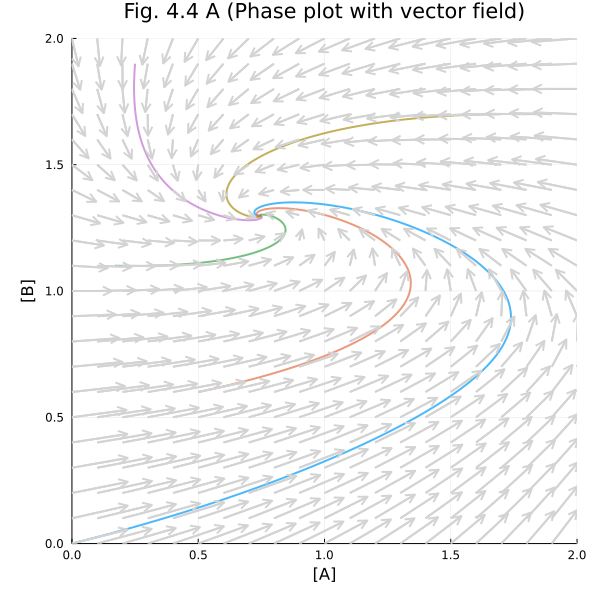
# Figure 4.5A
p45a = plot(aspect_ratio=:equal, title="Fig. 4.5 A (Phase plot with nullclines)")
# Phase plots
for sol in sols
plot!(p45a, sol, vars=(1, 2), linealpha=0.7, lab=nothing)
end
# Parametric plots for nullclines
plot!(p45a, nullcline_a, identity, 0.0, 2.0, label="A nullcline", line=(:black, :dot))
plot!(p45a, nullcline_b, identity, 0.0, 2.0, label="B nullcline", line=(:black, :dash))
plot!(p45a, xlim=(0.0, 2.0), ylim=(0.0, 2.0), legend=:bottomright, size=(600, 600), xlabel="[A]", ylabel="[B]")
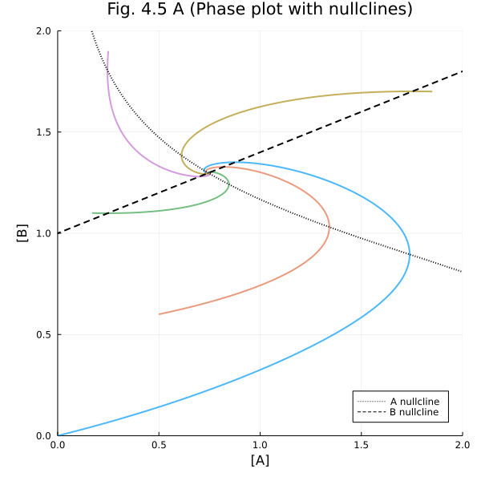
p45b = quiver(xx, yy, quiver=∂F1, line=(:lightgray), title="Fig. 4.5 B (Vector field with nullclines)", xlabel="[A]", ylabel="[B]")
plot!(p45b, nullcline_a, identity, 0.0, 2.0, label="A nullcline", line=(:black, :dot))
plot!(p45b, nullcline_b, identity, 0.0, 2.0, label="B nullcline", line=(:black, :dash))
plot!(p45b, aspect_ratio=1.0, xlim=(0.0, 2.0), ylim=(0.0, 2.0), legend=:bottomright, size=(600, 600))
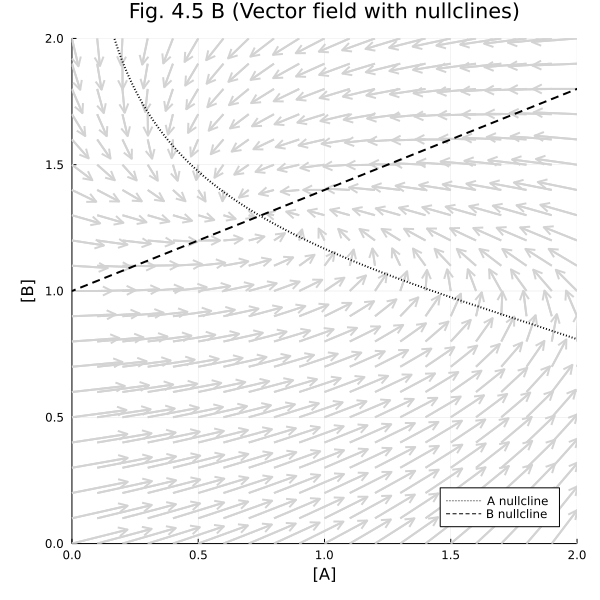
Figure 4.7, 4.8, 4.9, and 4.19A#
Symmetric (bistable) biological networks.
using DifferentialEquations
using ModelingToolkit
using Plots
using LinearAlgebra
# Default options for Plots.jl
Plots.gr(lw=2)
Plots.GRBackend()
hill(x, k) = x / (x + k)
hill(x, k, n) = hill(x^n, k^n)
hill (generic function with 2 methods)
# Model of symmetric network from Figure 4.6. This code generates Figures 4.7, 4.8, 4.9, and 4.19A
@parameters k[1:4] n[1:2]
@variables t S[1:2](t)
D = Differential(t)
eqs = [ D(S[1]) ~ k[1] * hill(1, S[2], n[1]) - k[3] * S[1],
D(S[2]) ~ k[2] * hill(1, S[1], n[2]) - k[4] * S[2]]
@named sys = ODESystem(eqs)
┌ Warning: The variable syntax (S[1:2])(t) is deprecated. Use (S(t))[1:2] instead.
│ The former creates an array of functions, while the latter creates an array valued function.
│ The deprecated syntax will cause an error in the next major release of Symbolics.
│ This change will facilitate better implementation of various features of Symbolics.
└ @ Symbolics /root/.julia/packages/Symbolics/kG5bl/src/variable.jl:129
\[\begin{split} \begin{align}
\frac{dS_1(t)}{dt} =& \frac{1^{n_1} k_1}{\left( \mathrm{S_2}\left( t \right) \right)^{n_1} + 1^{n_1}} - \mathrm{S_1}\left( t \right) k_3 \\
\frac{dS_2(t)}{dt} =& \frac{1^{n_2} k_2}{\left( \mathrm{S_1}\left( t \right) \right)^{n_2} + 1^{n_2}} - \mathrm{S_2}\left( t \right) k_4
\end{align}
\end{split}\]
ode_f = ODEFunction(sys, [S...], [k..., n...])
(::ODEFunction{true, ModelingToolkit.var"#f#414"{RuntimeGeneratedFunctions.RuntimeGeneratedFunction{(:ˍ₋arg1, :ˍ₋arg2, :t), ModelingToolkit.var"#_RGF_ModTag", ModelingToolkit.var"#_RGF_ModTag", (0x84fdd8dd, 0xef1bf695, 0x1678f6b3, 0xebfcc445, 0x760a768a)}, RuntimeGeneratedFunctions.RuntimeGeneratedFunction{(:ˍ₋out, :ˍ₋arg1, :ˍ₋arg2, :t), ModelingToolkit.var"#_RGF_ModTag", ModelingToolkit.var"#_RGF_ModTag", (0xa000e108, 0xc237d551, 0x88be20ec, 0xcebce978, 0x937351cb)}}, UniformScaling{Bool}, Nothing, Nothing, Nothing, Nothing, Nothing, Nothing, Nothing, Nothing, Nothing, Nothing, Vector{Symbol}, Symbol, ModelingToolkit.var"#474#generated_observed#421"{Bool, ODESystem, Dict{Any, Any}}, Nothing}) (generic function with 1 method)
function ∂F(x, y, params; scale=20)
du = ode_f([x, y], params, 0.0)
# Tweaking arrow length
return du ./ (norm(du)^0.5 * scale)
end
∂F (generic function with 1 method)
params = [20.0, 20.0, 5.0, 5.0, 4.0, 1.0]
tend = 4.0
sol1 = solve(ODEProblem(ode_f, [3.0, 1.0], tend, params))
sol2 = solve(ODEProblem(ode_f, [1.0, 3.0], tend, params))
p1 = plot(sol1, xlabel="Time", ylabel="Concentration", legend=:right, title= "Fig 4.7A (1)")
p2 = plot(sol2, xlabel="Time", ylabel="Concentration", legend=:right, title= "Fig 4.7A (2)")
fig47a = plot(p1, p2, layout=(2, 1), size=(600, 600))
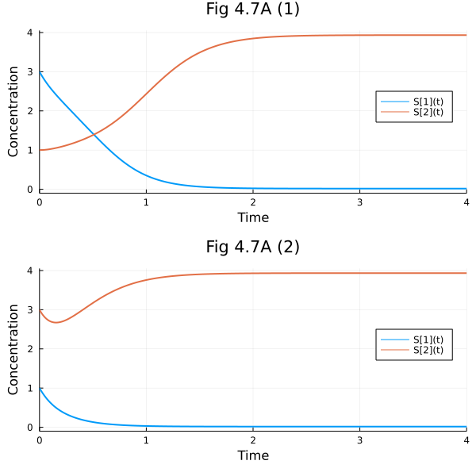
nullclineS1(B) = params[1] / params[3] * hill(1, B, params[5])
nullclineS2(A) = params[2] / params[4] * hill(1, A, params[6])
nullclineS2 (generic function with 1 method)
r = LinRange(0.0, 5.0, 20)
xx = [x for y in r, x in r]
yy = [y for y in r, x in r]
∂F1(x, y) = ∂F(x, y, params)
pl = quiver(xx, yy, quiver=∂F1, line=(:lightgrey))
plot!(pl, nullclineS1, identity, 0.0, 5.0, lab="Nullcline S1", line=(:dash, :red))
plot!(pl, identity, nullclineS2, 0.0, 5.0, lab="Nullcline S2", line=(:dash, :blue))
plot!(pl, title="Fig 4.7 B", xlim=(0.0, 5.0), ylim=(0.0, 5.0), aspect_ratio = 1.0, size = (600, 600))
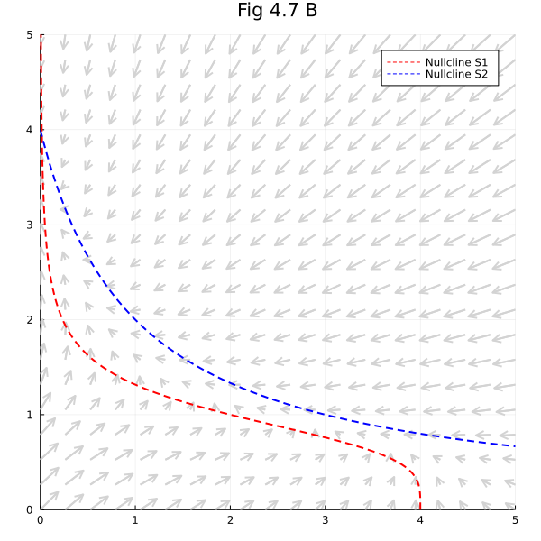
params = [20.0, 20.0, 5.0, 5.0, 4.0, 4.0]
tend = 4.0
sol1 = solve(ODEProblem(ode_f, [3.0, 1.0], tend, params))
sol2 = solve(ODEProblem(ode_f, [1.0, 3.0], tend, params))
pl1 = plot(sol1, xlabel="Time", ylabel="Concentration", legend=:right, title= "Fig 4.8A (1)")
pl2 = plot(sol2, xlabel="Time", ylabel="Concentration", legend=:right, title= "Fig 4.8A (2)")
fig48a = plot(pl1, pl2, layout=(2, 1), size=(600, 600))
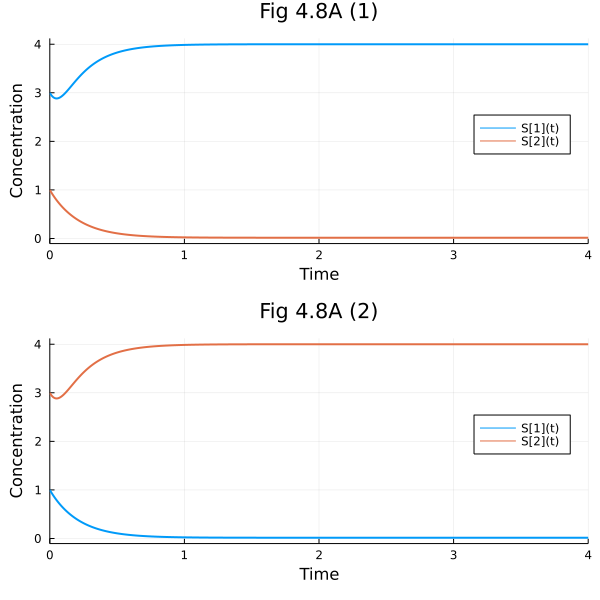
∂F2(x, y) = ∂F(x, y, [20, 20, 5, 5, 4, 4])
r = LinRange(0.0, 5.0, 20)
xx = [x for y in r, x in r]
yy = [y for y in r, x in r]
pl1 = quiver(xx, yy, quiver=∂F2, line=(:lightgrey))
plot!(pl1, nullclineS1, identity, r[1], r[end], lab="Nullcline S1", line=(:dash, :red))
plot!(pl1, identity, nullclineS2, r[1], r[end], lab="Nullcline S2", line=(:dash, :blue))
plot!(pl1, title="Fig 4.8 B", xlim=(r[1], r[end]), ylim=(r[1], r[end]), aspect_ratio = :equal)
r2 = LinRange(1.0, 1.5, 20)
xx2 = [x for y in r2, x in r2]
yy2 = [y for y in r2, x in r2]
pl2 = quiver(xx2, yy2, quiver=(x, y) -> ∂F2(x,y) ./ 3, line=(:lightgrey))
plot!(pl2, nullclineS1, identity, r2[1], r2[end], lab="Nullcline S1", line=(:dash, :red))
plot!(pl2, identity, nullclineS2, r2[1], r2[end], lab="Nullcline S2", line=(:dash, :blue))
plot!(pl2, title="Fig 4.8 B (close up)", xlim=(r2[1], r2[end]), ylim=(r2[1], r2[end]), aspect_ratio = :equal, xlabel="[S1]", ylabel="[S2]")
plot(pl1, pl2, size=(1000, 500))
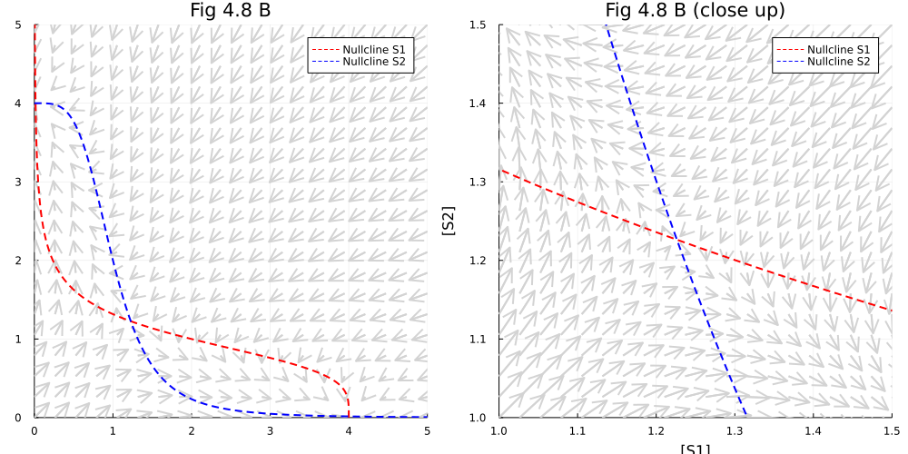
pls = map((8.0, 16.0, 20.0, 35.0)) do k1
params[1] = k1
plot(nullclineS1, identity, 0.0, 7.0, lab="Nullcline S1")
plot!(identity, nullclineS2, 0.0, 7.0, lab="Nullcline S2")
plot!(title = "K1 = $k1", xlim=(0.0, 7.0), ylim=(0.0, 7.0),
aspect_ratio = 1.0, size = (800, 800), xlabel="[S1]", ylabel="[S2]")
end
params[1] = 20
plot(pls...)
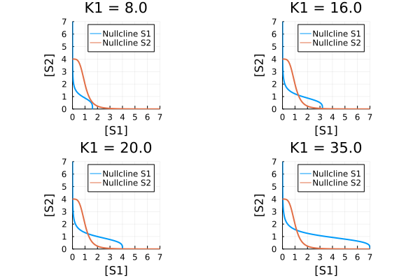
Figure 4.11#
Surface plots.
Reference: surface plots @ PlotsGallery.jl
using Plots
Plots.gr(lw=2)
Plots.GRBackend()
z1(x, y) = x^2 + 0.5y^2
z2(x, y) = (.2x^2-1)^2 + y^2
x1 = y1 = range(-1.0, 1.0, length=51)
x2 = range(-2.75, 2.75, length=80)
y2 = range(-0.75, 0.75, length=80)
p1 = surface(x1, y1, z1, title="Single-well potential")
p2= contourf(x1, y1, z1)
p3 = surface(x2, y2, z2, title="Double-well potential")
p4 = contourf(x2, y2, z2)
plot(p1, p2, p3, p4,size=(800, 600))
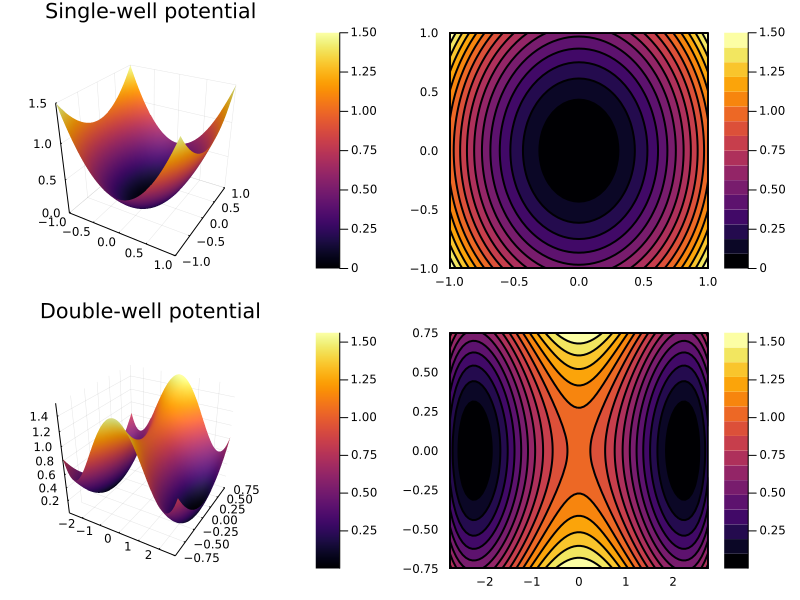
Figure 4.15, 4.16, and 4.17#
Oscillatory network.
using DifferentialEquations
using ModelingToolkit
using Plots
using LinearAlgebra
Plots.gr(lw=2)
Plots.GRBackend()
hill(x, k) = x / (x + k)
hill(x, k, n) = hill(x^n, k^n)
hill (generic function with 2 methods)
# Model of oscillatory network from Figure 4.14. This code generates Figures 4.15, 4.16, and 4.17
@parameters k_0 k_1 k_2 n
@variables t A(t) B(t)
D = Differential(t)
(::Differential) (generic function with 2 methods)
eqs = [D(A) ~ k_0 - k_1 * A * ( 1 + B^n),
D(B) ~ k_1 * A * ( 1 + B^n) - k_2 * B]
# Secure positions of state variable and parameters
@named sys = ODESystem(eqs)
\[\begin{split} \begin{align}
\frac{dA(t)}{dt} =& k_{0} - k_{1} \left( 1 + \left( B\left( t \right) \right)^{n} \right) A\left( t \right) \\
\frac{dB(t)}{dt} =& k_{1} \left( 1 + \left( B\left( t \right) \right)^{n} \right) A\left( t \right) - k_{2} B\left( t \right)
\end{align}
\end{split}\]
ode_f = ODEFunction(sys, [A, B], [k_0, k_1, k_2, n])
(::ODEFunction{true, ModelingToolkit.var"#f#414"{RuntimeGeneratedFunctions.RuntimeGeneratedFunction{(:ˍ₋arg1, :ˍ₋arg2, :t), ModelingToolkit.var"#_RGF_ModTag", ModelingToolkit.var"#_RGF_ModTag", (0xe5993f91, 0x94be17a7, 0xd424d359, 0xfff2da2b, 0x286f5f2e)}, RuntimeGeneratedFunctions.RuntimeGeneratedFunction{(:ˍ₋out, :ˍ₋arg1, :ˍ₋arg2, :t), ModelingToolkit.var"#_RGF_ModTag", ModelingToolkit.var"#_RGF_ModTag", (0xeeb7b342, 0x784a7dc3, 0x55952ed6, 0x0541c150, 0xee4807b4)}}, UniformScaling{Bool}, Nothing, Nothing, Nothing, Nothing, Nothing, Nothing, Nothing, Nothing, Nothing, Nothing, Vector{Symbol}, Symbol, ModelingToolkit.var"#474#generated_observed#421"{Bool, ODESystem, Dict{Any, Any}}, Nothing}) (generic function with 1 method)
function figure0415(; ps = [k_0 => 8.0, k_1 => 1.0, k_2 => 5.0, n => 2],
r = LinRange(0.0, 4.0, 20),
tend = 8.0,
figtitle="Fig 4.15")
u0s = ( [A=>1.5, B=>1.0], [A=>0.0, B=>1.0],
[A=>0.0, B=>3.0], [A=>2.0, B=>0.0])
parvals = last.(ps)
sols = map(u0s) do u0
ODEProblem(sys, u0, tend, ps) |> solve
end
# Fig 4.15 A
p1 = plot(sols[1], xlabel="Time", ylabel="Concentration", title ="$figtitle (A)", xlims=(0.0, 8.0))
# Fig 4.15 B: Vetor field
function ∂F(x, y; scale=20)
dxdy = ode_f([x, y], parvals, 0)
return dxdy ./ (hypot(x, y)^0.5 * scale)
end
nullcline_s1(s2) = (parvals[1] / parvals[2]) * hill(1, s2, parvals[4])
nullcline_s2(s2) = (parvals[3] * s2) / (parvals[2] * (1 + s2^parvals[4]))
xx = [x for y in r, x in r]
yy = [y for y in r, x in r]
p2 = plot(title = "$figtitle (B)", xlabel="[A]", ylabel="[B]")
for sol in sols
plot!(p2, sol, vars=(1, 2), label=nothing)
end
rMin, rMax = r[begin], r[end]
plot!(p2, nullcline_s1, identity, rMin, rMax, label="Nullcline A", line=(:dash, :red))
plot!(p2, nullcline_s2, identity, rMin, rMax, label="Nullcline B", line=(:dash, :blue))
quiver!(p2, xx, yy, quiver=∂F, line=(:lightgrey),
xlims=(rMin, rMax), ylims=(rMin, rMax),
aspect_ratio=:equal, size=(700, 700))
return (p1, p2)
end
figure0415 (generic function with 1 method)
fig415a, fig415b = figure0415()
fig415a
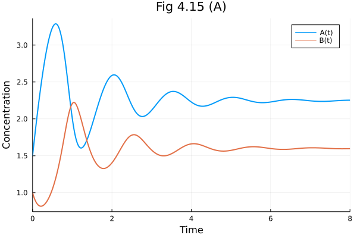
fig415b
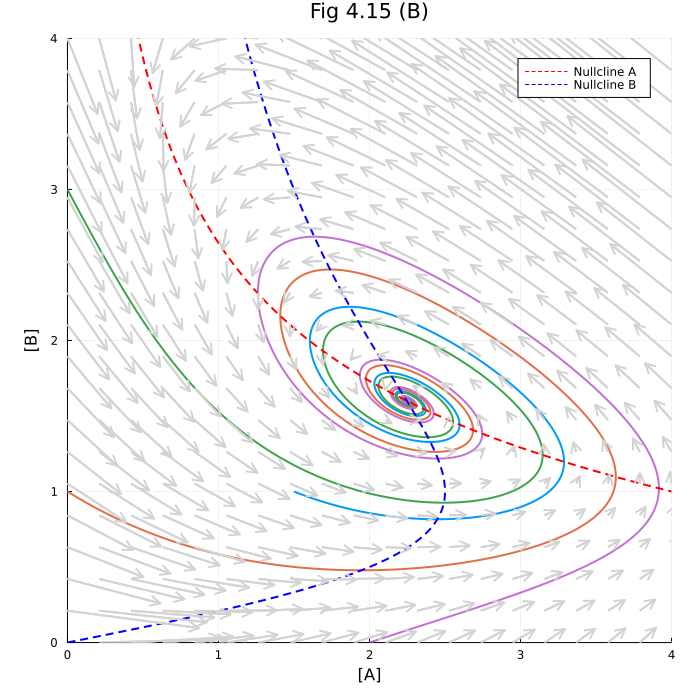
fig416a, fig416b = figure0415(ps = [k_0 => 8.0, k_1 => 1.0, k_2 => 5.0, n => 2.5], tend = 1000.0, figtitle="Fig 4.16")
(Plot{Plots.GRBackend() n=2}, Plot{Plots.GRBackend() n=26})
fig416a
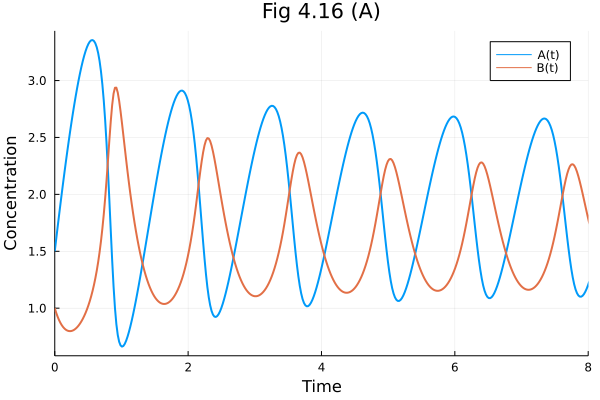
fig416b

ps = [k_0=>8, k_1=>1, k_2=>5, n=>2.5]
parvals = last.(ps)
prob = ODEProblem(sys, [A=>2.0, B=>1.5], 10.0, ps)
sol417 = solve(prob)
r = LinRange(0.0, 4.0, 20)
xx = [x for y in r, x in r]
yy = [y for y in r, x in r]
"Vector field"
function ∂F(x, y; scale=20)
dxdy = ode_f([x, y], parvals, 0)
return dxdy ./ (hypot(x, y)^0.5 * scale)
end
nullcline_s1(s2) = (parvals[1] / parvals[2]) * hill(1, s2, parvals[4])
nullcline_s2(s2) = (parvals[3] * s2) / (parvals[2] * (1 + s2^parvals[4]))
xx = [x for y in r, x in r]
yy = [y for y in r, x in r]
quiver(xx, yy, quiver=∂F, line=(:lightgrey))
plot!(sol417, vars=(1, 2), label=nothing, line=(:black), arrow=0.4)
plot!(nullcline_s1, identity, 0.0, 4.0, label="Nullcline S1", line=(:dash, :red))
plot!(nullcline_s2, identity, 0.0, 4.0, label="Nullcline S2", line=(:dash, :blue))
plot!(title = "Fig. 4.17", xlabel="[S1]", ylabel="[S2]",
xlims=(1.0, 3.0), ylims=(1.0, 3.0), aspect_ratio=:equal, size=(700, 700))
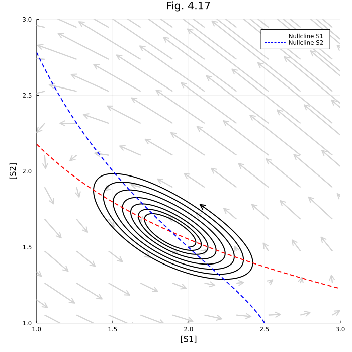
Figure 4.18 Continuation diagram#
NOTE
Bifurcations.jl does not work (As I am writing this). And BifurcationKit.jl might be too complex for this example.
using DifferentialEquations
using ModelingToolkit
using Plots
Plots.gr(lw=2)
Plots.GRBackend()
# Convenience functions
hill(x, k) = x / (x + k)
hill(x, k, n) = hill(x^n, k^n)
hill (generic function with 2 methods)
@variables t A(t) B(t)
@parameters k_1, k_2, k_3, k_4, k_5, n
D = Differential(t)
(::Differential) (generic function with 2 methods)
eqs = [ D(A) ~ k_1 * hill(1, B, n) - (k_5 + k_3) * A,
D(B) ~ k_2 + k_5 * A - k_4 * B]
@named sys = ODESystem(eqs, t, [A, B], [k_1, k_2, k_3, k_4, k_5, n])
\[\begin{split} \begin{align}
\frac{dA(t)}{dt} =& \frac{1^{n} k_{1}}{1^{n} + \left( B\left( t \right) \right)^{n}} - \left( k_{3} + k_{5} \right) A\left( t \right) \\
\frac{dB(t)}{dt} =& k_{2} + k_{5} A\left( t \right) - k_{4} B\left( t \right)
\end{align}
\end{split}\]
params = Dict(k_1 => 20.0, k_2 => 5.0, k_3 => 5.0, k_4 => 5.0, k_5 => 2.0, n => 4)
u0 = [A=>0.0, B=>0.0]
2-element Vector{Pair{Num, Float64}}:
A(t) => 0.0
B(t) => 0.0
# Could also use ensemble analysis: https://diffeq.sciml.ai/stable/features/ensemble/
a = map(LinRange(0.0, 1000.0, 50)) do k1
p = copy(params)
p[k_1] = k1
prob = SteadyStateProblem(sys, u0, p)
sol = solve(prob, DynamicSS(Rodas5()))
sol[1]
end
50-element Vector{Float64}:
0.0
0.7535911916031875
1.1001047707163405
1.3363327385883506
1.5188534281751964
1.6690621641551218
1.7974922922969292
1.9101562980661422
2.010828608162696
2.1020421737474906
2.1855857307755087
2.262774357676392
2.3345992595996754
⋮
3.4183944195623073
3.4458806023213495
3.472810877319885
3.4992099864408446
3.525100957923153
3.5505052977704943
3.575443143230411
3.599934034219197
3.623994424419684
3.647641154904433
3.6708910118911313
3.693757289305842
plot(LinRange(0.0, 1000.0, 50), a, title = "Fig 4.18 Continuation diagram",
xlabel = "K1" , ylabel= "Steady state [A]",
legend=nothing, ylim=(0.0, 4.0), xlim=(0, 1000))
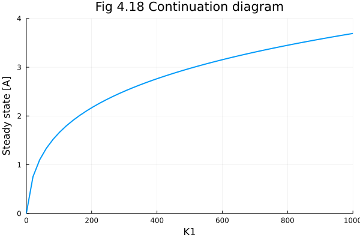
Figure 4.22 Tangent line#
using Plots
Plots.gr(lw=2)
Plots.GRBackend()
curve(t) = 3 / (t-2)
tange(t) = 1.5 - (t - 4) * 0.75
plot(curve, 2.2, 8.0, lab="Curve")
plot!(tange, 2.7, 5.3, lab="Tangent line")
plot!(title="Fig 4.22", xlabel="Reaction rate", ylabel="Inhibitor concentration",
xlims=(2.0, 8.0), ylims=(0.0, 4.0))
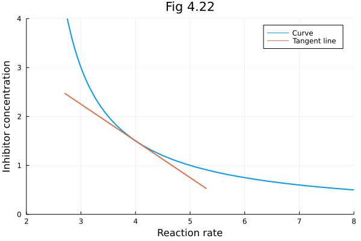